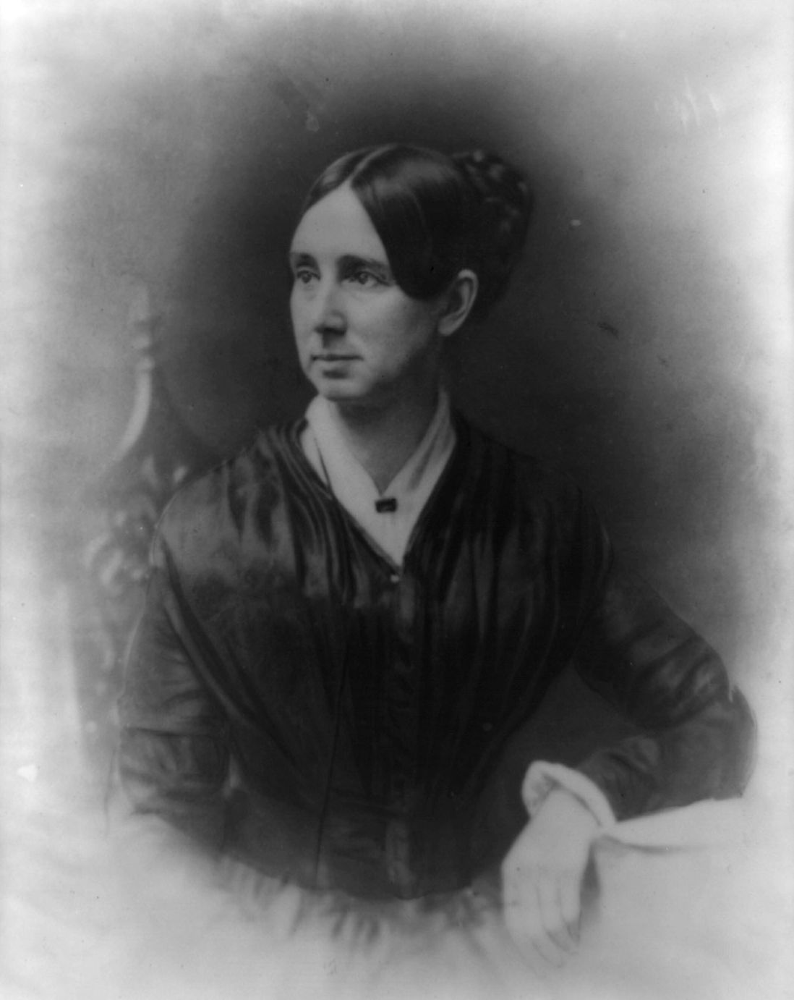

Directions: Fill in the chart as we study each part of the lesson. Keep this page in your notebook. You will use it again on the review day before the unit test, and it is the record the writing task argues from.

| Part | What was broken | The remedy proposed | Who was asked to act |
|---|---|---|---|
| The camp meeting | |||
| Finney's revival | |||
| The temperance pledge | |||
| Mann's common schools | |||
| Dix's memorial |
From a chosen soul to an organized remedy, in one paragraph. Read across your chart. Explain in your own words how a teaching about one person's will became, in order, a meeting, a pledge, a school system, and a law, and name the first evil the reformers set out to fix. Use at least three rows of the chart, and include one date from each row you use.
| Part | What was broken | The remedy proposed | Who was asked to act |
|---|---|---|---|
| The camp meeting | Scattered frontier settlements had no settled parish within reach, and religion had no regular hold on the people who lived in them. | The outdoor camp meeting, held for days at places such as Red River in 1800 and Cane Ridge in 1801, gathering a crowd, pressing a decision, and organizing the decided into a congregation. | The preachers and the churches that sent them, above all the Methodist circuit riders who carried the form across the frontier. |
| Finney's revival | A church waiting for conversion to arrive as a miracle, while sinners waited with it. | The right use of the appropriate means, stated in the Lectures on Revivals of Religion of 1835: protracted meetings, plain preaching aimed at a decision, and the anxious bench, on the Rochester model of 1830 and 1831. | Preachers and churches, whose duty Finney said religion was, and the sinner, whose own will had to choose. |
| The temperance pledge | Drink, and the ruined wages, violence, and neglect the reformers laid at its door. | The signed pledge of the American Temperance Society, founded in 1826, at first against ardent spirits, then total abstinence in the 1830s, then campaigns for legal prohibition in the 1840s. | First the signer, then the local society that held him to the standard, and at last the state legislatures. |
| Mann's common schools | Schooling left to a district's wealth or indifference, in a republic drifting toward fixed classes of rich and poor. | Tax supported common schools open to every child, with trained teachers, graded classes, and state supervision, argued in the annual reports from 1837 to the Twelfth Annual Report of 1848. | The Commonwealth and its districts, asked to tax themselves for schools, and the voters Mann addressed in report after report. |
| Dix's memorial | The insane confined in jails and almshouses, in cages, closets, cellars, stalls, and pens, chained and beaten, under what Dix called defective legislation. | The Memorial of January 1843, an inspected, town by town record laid before the legislature, and the public asylums that legislation built, beginning with the enlarged asylum at Worcester. | The Legislature of Massachusetts, told that the Commonwealth, not its parts, was accountable, and then the legislatures of state after state. |
From a chosen soul to an organized remedy, in one paragraph. Strong answers keep the chain in its order. The camp meeting came first as an instrument, at Red River in 1800 and Cane Ridge in 1801, religion arriving as an event that gathered a crowd and pressed a decision. Finney gave the event its doctrine in the Lectures of 1835: conversion is an act of the will, and a revival is the result of means rightly used, so the decided will expects employment. The first employment was the pledge, the American Temperance Society of 1826 fixing on drink as the first evil to fix, its remedy widening from a signature against ardent spirits to total abstinence and then to prohibition by law. Mann carried the same confidence into the schoolhouse, asking the Commonwealth from 1837 to build the common schools his Twelfth Annual Report defended in 1848. Dix closed the chain at the legislature's door in January 1843, where the remedy for people who could not sign or choose was a record, a petition, and an asylum built by law.